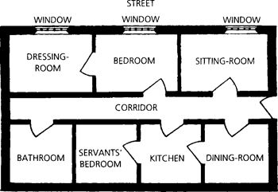
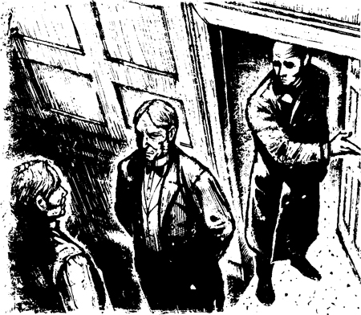
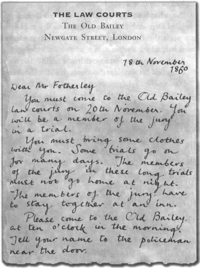
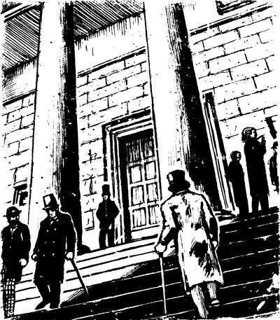

Bây giờ tôi phải kể cho bạn nghe thêm về căn hộ của tôi.
Phòng ngủ của tôi nằm ở mặt trước tòa nhà, giữa phòng khách và phòng thay đồ. Tôi có thể đi vào phòng khách từ hành lang của căn hộ. Và tôi có thể đi vào phòng ngủ từ hành lang. Nhưng tôi không thể đi vào phòng thay đồ từ hành lang. Tôi phải đi vào phòng thay đồ từ phòng ngủ. Đây là sơ đồ căn hộ của tôi.

Một buổi tối tháng mười một, tôi đang đứng trong phòng ngủ của mình. Bên ngoài trời rất tối. Trong phòng ngủ, hai ngọn nến đang cháy.
Tối hôm đó, tôi rất mệt và tôi muốn đi ngủ sớm. Tôi đi vào phòng thay đồ. Tôi cởi áo khoác và cà vạt. Rồi tôi quay trở lại phòng ngủ. Tôi đóng cửa phòng thay đồ lại.
Một lát sau, người hầu của tôi, John Derrick, bước vào phòng ngủ.
‘Ngày mai tôi phải ra ngoài sớm, John,’ tôi nói. ‘Tôi sẽ gặp một người quan trọng ở ngân hàng lúc chín rưỡi. Tôi sẽ ăn sáng lúc bảy rưỡi.’
Đột nhiên, tôi nghe thấy tiếng động sau lưng John Derrick. Cửa phòng thay đồ mở ra. Tôi thấy một người đàn ông đứng trong phòng thay đồ. Anh ta đang nhìn chằm chằm vào tôi. Anh ta vẫy tay chào tôi. Anh ta không nói. Nhưng anh ta đang nói điều gì đó với tôi. Anh ta đang nói, ‘Vào đây!’
Tôi đã từng thấy người đàn ông kỳ lạ này trước đây. Tôi đã thấy anh ta ở Piccadilly. Anh ta chính là người đàn ông có đôi mắt vô hồn – Người đàn ông xanh xao! Tại sao anh ta lại ở trong phòng thay đồ của tôi?

Trong giây lát, tôi không thể cử động. Rồi Người đàn ông xanh xao đóng cửa phòng thay đồ lại. Tôi lấy một ngọn nến từ bàn của mình. Tôi chạy đến cửa và mở nó ra. Tôi đi vào phòng thay đồ. Nhưng căn phòng trống rỗng! Không có ai ở đó!
John Derrick bước vào phòng thay đồ. Anh ta nhìn vào mặt tôi.
‘Thưa ngài, có chuyện gì vậy?’ anh ta hỏi. ‘Có ai ở đây không?’
John Derrick đã không thấy cửa mở. Anh ta đã không nhìn thấy Người đàn ông xanh xao. Cánh cửa và người đàn ông đó đã ở sau người hầu của tôi.
‘John, tôi đã nhìn thấy một điều rất kỳ lạ,’ tôi nói.
Tôi chạm vào vai anh ta. Đột nhiên, cánh tay anh ta run lên.
‘Vâng, thưa ngài,’ anh ta nói, ‘ngài đã nhìn thấy một điều kỳ lạ. Ngài đã nhìn thấy một người đàn ông đã chết – một người đàn ông mặt xanh xao. Anh ta đang gọi ngài!’
Tôi từ từ đi bộ trở lại phòng ngủ và ngồi xuống giường. Tôi sợ lắm. Lúc đầu, John không biết về người đàn ông trong phòng thay đồ. Rồi tôi chạm vào cánh tay của John. Và sau đó, anh ta đã biết về Người đàn ông xanh xao.
Tôi sợ lắm, và John cũng sợ. Anh ta mang cho tôi một ly rượu mạnh. Tôi nhanh chóng uống cạn. Nhưng đêm đó tôi không ngủ ngon.
———
Sáng hôm sau, John mang bữa sáng đến cho tôi lúc bảy rưỡi. Anh ta rời khỏi phòng ăn và một lát sau quay lại. Anh ta đưa cho tôi một lá thư.
‘Tôi sẽ đọc lá thư này vào buổi tối, John,’ tôi nói. ‘Sáng nay tôi phải ra ngoài sớm. Hôm nay tôi sẽ rất bận.’
Tôi đã bận cả ngày. Buổi sáng, tôi đến ngân hàng. Có rất nhiều việc phải làm ở ngân hàng.
Buổi tối, tôi về nhà. Tôi mở thư. Lá thư này từ Tòa án.

‘Ngày 20 tháng 11! Ngày mai rồi,’ tôi nghĩ.
Tôi kể cho John nghe về lá thư. Anh ta nhanh chóng sắp một số quần áo của tôi vào vali. Rồi tôi đi ngủ.
———
Sáng hôm sau, tôi thức dậy sớm. Tôi rời khỏi căn hộ. Tôi đi dọc theo Piccadilly. Tôi lên một chiếc xe ngựa nhỏ và đến phố Newgate. Lúc mười giờ, tôi đến Old Bailey.
